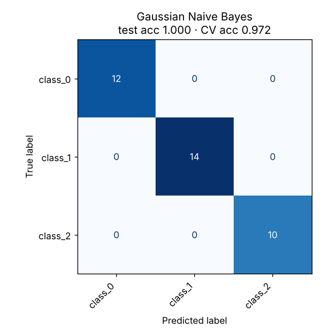

Naive Bayes
Uses Bayes’ theorem to ask which class most likely produced these features, assuming the features are independent.
Try it
Experiment: Pick XOR: each class is spread evenly along both axes, so per-feature bell curves can’t separate them. That’s the independence assumption failing.
The idea
For each class, Naive Bayes learns what typical values of each feature look like. Gaussian Naive Bayes stores a mean and a spread per feature per class, which is the bell curves drawn as ellipses in the demo.
To classify, it multiplies how likely each feature value is under each class, times how common the class is, and picks the largest. The “naive” part is assuming features don’t influence each other. That’s rarely true, yet the model works surprisingly well, especially for text, where each word is a feature.
How it works, step by step
- Estimate the prior: how common each class is in the training data.
- For each class and each feature, estimate a distribution (Gaussian for numbers, word frequencies for text).
- For a new example, multiply the prior by the likelihood of each feature value under that class.
- Predict the class with the highest result (computed with logarithms to avoid tiny numbers).
Strengths and weaknesses
Strengths
- Trains in one pass over the data: extremely fast
- Works with very little training data
- Excellent baseline for text (spam filters, topic labelling)
- Handles many classes naturally
Weaknesses
- Independence rarely holds, so probabilities are poorly calibrated
- Cannot capture interactions between features (try XOR)
- A value never seen in training gets probability zero without smoothing
Use it when: Text classification, very large or streaming data, or as a quick baseline.
Avoid it when: Features interact strongly or you need trustworthy probability values.
In this repository
Dataset: Wine (178 rows, 13 features)
The test set has only 36 examples, so one mistake moves accuracy by 2.8 points. The cross-validation score is the more reliable number.

from sklearn.naive_bayes import GaussianNB, MultinomialNB
GaussianNB().fit(X_train, y_train) # numeric features
MultinomialNB().fit(word_counts, labels) # text as word countsFull code: models/04_naive_bayes. Train it on your own data with
python models/04_naive_bayes/train.py --data your.csv --target column.
Check yourself
That assumption lets it multiply per-feature probabilities.
Word counts suit it well, and it trains in a single pass.
Looked at one feature at a time, both XOR classes look identical.
Answer all three correctly to mark this model as learned.